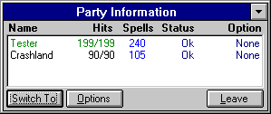
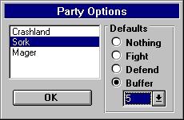

Parties
Sometimes four groups of monsters against one character just doesn't seem fair. To compensate for this, a player is able to organize a party of up to 4 characters to run around together, fight together, and interact with each other (i.e. cast Heal/Resistant spells on each other). To create a party, a character must "ask" another character to join them. This is done by pressing 'a' then selecting or typing in the name and password of the character that the user wishes to add to the party. Once a character becomes a member of the party, they can interact with all other characters in the party.
One can also Ask a character who is dead to join, but the character being asked must have a "raise" spell cast on them already. Once asked, the player will be prompted to accept the raise or not for the character. If the raise is accepted, the character will join the party as soon as they are alive.
One of the major advantages to having a group of characters running around versus a single character is that the player will generally be able to take the group deeper into the dungeon and have a better chance of all characters surviving the trip since they can depend on each other.
Characters that are oppositely aligned cannot be in the same party together (i.e. a Good character can't join a party that has an Evil character in it).
Control is based on the currently "selected" character. For example, if a player has a party of three characters, the player can select which character they wish to "bring up" or enter commands for by pressing ALT-<character number> (i.e. ALT-1). Once the character is selected, the interaction with the game is the exact same as if the character was running by themselves.
You may notice that when you switch characters in the dungeon, all of the windows don't automatically update. The reason for this is because it sometimes takes a few seconds to repaint all of the windows (on slower machines), and when in combat, wasting this about of time in the middle of a fight for a repaint is unacceptable. Not updating all of the windows allows the user to switch between characters in the party as fast as one can hit the keys or click the mouse.
To update all of the windows to the 'current character' use the Switch To button described below.
Creating a Party
The way you create a party is by 'a'sking other existing characters to join the current character that you are running. In order for other characters to join you, they must be in the same room, or in the city with you, and alive. Once a party of characters is formed, the program will automatically remember and reload the party (if requested) when the party leader is loaded again. A party is only automatically reloaded if the party leader is run from the Main Menu. Parties are limited to a maximum of 4 characters. You can remove a party member by asking them to 'L'eave.
For a more detailed list of commands in reference to Parties, see the Commands section of this Helplesson.
The Party Window

Party Order
A player can change the order of the party (and swap character positions) by Dragging and Dropping characters names within the Name field of the Party Information Window.
Giving Items & Gold
You can also give an item or gold to another character by Dragging & Dropping the selected item from the items window or the gold from the character window to the name of the receiving character in the party window.
Switch To
This will cause all character information windows to reflect information about the select character, and cause all commands to switch over to that specific character. The difference in using this option versus the ALT-<character number> is that this option updates all of the informational windows. Using ALT-<character number> only changes who the current commands are for (unless in the City). One can also double-click on the Character's Name to automatically switch to that character.
Leave
Selecting this option will remove the selected character from the party.
Options
Will bring up the following screen.
The Party Options Window

Combat Settings
This is the default setting for the selected character when combat starts. None, Fight, Defend, or a spell buffer can be selected. This setting can be changed during combat by switching to the specified character (using ALT-<character number>) and selecting another option.
Party Settings
These are the general settings for the party.
Character Interaction
Any character that is a member of the party can interact (i.e. cast spells on, give to, etc.) with any other character that is a member of the party.
If a player wishes to Give items to another character, but doesn't want to run around in the dungeon with the other character, simply add the other character to the party, give the items, then have the character Leave the party.
Moving Around
Walking around and casting movement spells (i.e. Teleport) can be done by any member of the party. If the party leader hits a teleporter that's random, all members of the party will probably disappear, and the leader will be alone, returning to single-character play. Keep in mind that if the Leader of the party casts Teleport and lands in Rock, all members of the party will also land in Rock.
Combat
Combat is where the fun starts. Since it takes place in real time, a player must be quick at the keyboard with switching between characters to select what option they wish carried out for the current round. If a character has a default option other than "none" set for combat, that option will automatically be executed every round unless it has been interrupted by the player.
In the dungeon, when the player presses ALT-<character number>, the Dungeon Commands windows "focus" is switched to the specified character and the character's buffer window is updated to show the current character. Once a character is "switched to", all commands made will be the selected characters commands for combat. Below is an example of a combat situation with a party of three.
Example
The party walks into a room containing three groups of monsters, which the player realizes are pretty nasty. Since focus is on the party leader, the player hits "shift-5" to cast a spell from buffer 5. They then press 'N' to move to the next character (i.e. Character 2) and press '2' to select monster group 2 then 'f' to engage in fighting. The user then presses 'N' once again to select party member 3 and presses '3' to select monster group 3 and then Shift-6 to use an item that is in spell buffer 6.
And now, when the round takes place, character one will cast a spell on monster group 1, character two will attack the 2nd monster group, and character three will use their item (#6) on monster group 3. After the round is over, the player can then choose their combat options once again.
Experience
Experience isn't distributed any differently for a party than that of a single character. Whoever hits the monster and/or kills the monster will receive the experience - nobody else. However, the amount of experience that a character earns for hitting/killing a monster (or casting a spell, etc.) will be less for larger parties. For best experience, run solo!
Quests
If one or more members of a group are quested for a specific monster that was just killed by the quested character (or a companion) or another character, all members that had that monster for a quest will receive credit for the kill.
Messages
Certain messages will appear when something out of the ordinary happens to a character, or when a character is close to death. Some examples of messages:
"Crashland" has been paralyzed!
"Sork" is now a statue!
Crashland - "Help! My hits are 15/250!"
Thief - "Thanks for the Potion of Fitness, Sork!"
It is very important for a player to keep an eye on all messages that appear, since they may be of importance.
Treasure & Traps
All gold found after combat or from a chest is split evenly between all characters that are still alive. If a character other than the leader opens a chest and triggers a Teleport trap, they will disappear from the party. If the Leader opens a chest and triggers a Teleport trap, they will disappear and the next character in line will become the Party leader.
Dying
When a member of the party dies, they automatically are unloaded and treated like any other dead character. If the party leader dies, the character next in line will become the new leader. If all members of the party die, the last "selected" character will become the main character and the party window will disappear.
Character Windows & Layout
The layout of the Character Windows will always reflect those of the Party Leader. If one loads a party of four and changes the size & position of the windows, these changes will only reflect upon the party leader. This means if another party member is loaded up individually, they will have their own window configuration intact.
Exiting
When a party leader has had enough for the day and exits the game, the character will be asked if they wish to have the party reorganized when they return. If the character answers yes, the next time they are run, the other characters that were in the party will rejoin (if they are still in the same area and not dead).
Summary
All in all, the game functions just as it does in single-character mode, except that the player has the option of switching between characters and having the characters interact with each other.
Also, keep in mind that regulating a party of characters takes some time to learn and can be tricky, so be sure to be patient and careful when running around a group of characters. It is recommended that players new to this feature run the upper levels to get the feel of controlling multiple characters in combat.
Move to the next section to read about Commands.
Move to the previous section to read about Dying.
M1: "The Depths of Dejenol" is a Trademark of Decklin's Domain Ltd and is © Copyright 1994-2026 All Rights Reserved